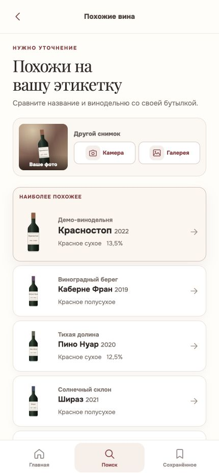
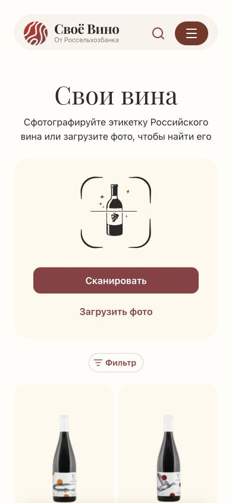

Меньше конкурирующих элементов.
Яснее следующий шаг.
Сначала сняты предыдущие экраны, затем новая компоновка — в одном размере 430 × 932 CSS px, ориентир iPhone. Это реальные снимки браузера с одинаковыми демонстрационными данными. «Было» — первая итерация v3, «Стало» — доработка. Рабочее приложение не менялось.
Основное сравнение — большой iPhone. Дополнительная проверка: 402 × 874 и 440 × 956 (классы iPhone Pro / Pro Max), 360 и 412 CSS px по ширине для Android. Это проверка адаптивной вёрстки в браузере, а не эмуляция Safari или конкретной модели Android. Размеры Apple ↗


Два действия — две строки
Убрана лишняя надпись «Другой снимок». Слева — открываемое фото, справа — «Снять заново» и «Выбрать фото» одинаковой ширины, одна над другой. Подписи объясняют действие без догадки по иконке. Лидер снова белый с винным контуром, как в принятой спецификации FE-057; бутылка достаточно крупная для сравнения.
ЧТО СОХРАНЯЕМ И ОТКУДА БЕРЁМ ПРИЁМЫ
Стиль бренда, мобильная иерархия

Живой сайт «Своё Вино», снят 25 сентября. Кремовая панель, крупный serif-заголовок, бордовое основное действие; загрузка фото стоит ниже сканирования. Сохраняем тёплые поверхности, Onest / Playfair, цвет действия #8f3d42 и семейство радиусов.
- Apple Visual Look Up на iPhone: фото остаётся контекстом, информация открывается отдельно. У нас миниатюра раскрывается для сверки, а не вытесняет выдачу.
- Google Lens на iOS: изображение и ответ имеют разные роли. Не добавляем действие «получить ответ» в состояние уже идущего поиска.
- Vivino на iPhone: съёмка и выбор существующего фото — разные входы. У нас оба доступны без скрытого переключателя.
- Apple HIG — ожидание: понятный статус вместо неподтверждённых процентов. Маскот даёт характер; индикатор показывает состояние.
Вертикальная колонка справа — наша адаптация для этого экрана, а не заявление, что все конкуренты делают так. Полный разбор источников и ограничений ↗


История изменений
25.09 · v3.2. Вертикальные действия замены фото; восстановлена белая поверхность лидера. Сцена ожидания стала крупнее и выше, фото и статус объединены ниже неё; убраны наклон, пересечение с маскотом и кнопка демонстрации из телефона. Основание: замечания Макса, сравнение снимков 430 × 932 и проверка дизайн-спеки.